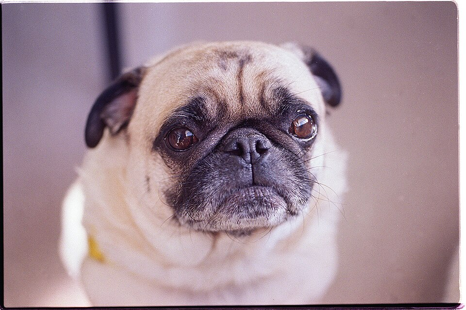
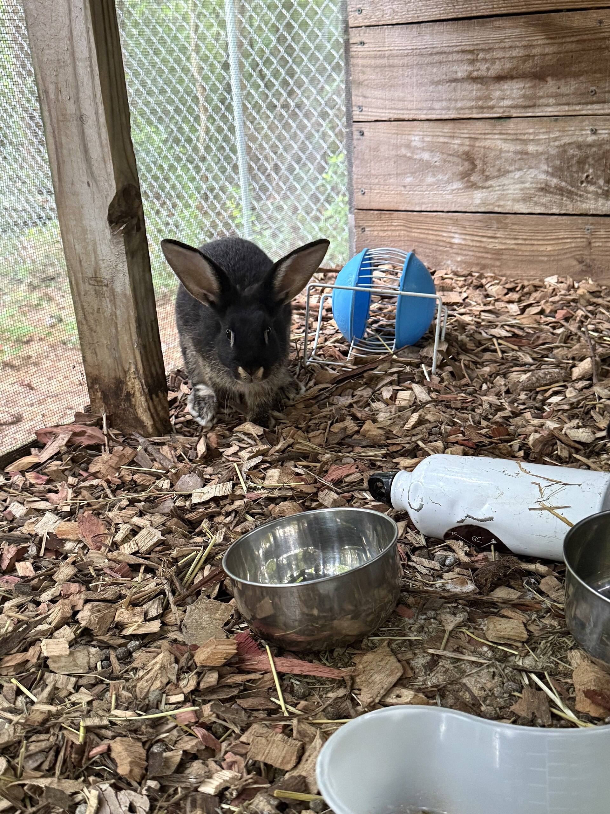

Qualzucht – wenn Schönheit Leiden bedeutet
Manche Tiere werden so gezüchtet, dass ihr Körper ein lebenslanger Nachteil ist. Die Nachfrage steuert das Angebot.
Form darf nicht leidenNachfrage stoppenAdoption

Auf einen Blick
- Qualzucht bedeutet: Tiere werden auf äußere Merkmale gezüchtet, die ihnen Schmerzen oder Einschränkungen verursachen.
- Das Tierschutzgesetz (§ 11b TierSchG) verbietet Qualzucht – aber die Durchsetzung ist lückenhaft.
- Solange Menschen Qualzucht-Rassen kaufen, werden sie gezüchtet.
- Adoption aus dem Tierschutz ist die konsequenteste Alternative.
Süß ist kein Qualitätsmerkmal
Wenn ein Tier wegen seiner Körperform schlechter atmet, sieht, läuft, frisst oder lebt, ist das kein Stil. Es ist ein angezüchteter Nachteil.
Was ist Qualzucht?
Mythos
„Rassestandard heißt gesund."
Standards beschreiben oft Aussehen. Sie garantieren nicht, dass ein Körper gut funktioniert.
Fakt
Funktion schlägt Form.
Atmung, Bewegung, Wahrnehmung und Schmerzfreiheit müssen wichtiger sein als ein niedliches Merkmal.
Qualzucht liegt vor, wenn durch Zucht körperliche Merkmale so übersteigert werden, dass das Tier darunter leidet. Das können sein: verkürzte Atemwege, deformierte Knochen, übermäßiges Fell, funktionsuntüchtige Organe. Das Tier kann sich nicht aussuchen, wie es aussieht. Es lebt mit den Konsequenzen, die Menschen ihm angezüchtet haben.
Die bekanntesten Beispiele
Mops und Französische Bulldogge (Brachyzephalie)
Kurze Schnauze, große Augen, flaches Gesicht – süß für den Menschen, eine Qual für das Tier. Die extrem verkürzten Atemwege führen zu chronischer Atemnot (Brachyzephales Atemwegssyndrom). Viele dieser Hunde können nicht normal atmen, nicht rennen, nicht schlafen, ohne zu schnarchen. Hitze kann lebensgefährlich werden, weil sie ihre Körpertemperatur nicht regulieren können. Die Augäpfel stehen oft so weit vor, dass sie bei Stößen herausfallen können.
Perserkatze
Die extreme Gesichtsverflachung verursacht bei diesen Katzen chronische Augenprobleme (die Tränenkanäle funktionieren nicht mehr richtig), Atemwegsverengungen und Zahnfehlstellungen. Manche Perserkatzen können ihr Futter nicht normal aufnehmen.
Schauwellensittich
Auf Größe und Kopfgefieder gezüchtet. Das überlange Stirngefieder verdeckt den Vögeln die Sicht. Sie sind unsicher, stressanfällig und in ihrer Bewegungsfreiheit massiv eingeschränkt.
Widderkaninchen
Die herabhängenden Ohren sehen niedlich aus, verursachen aber bei diesen Kaninchen chronische Ohrenentzündungen, Gehörprobleme und Schmerzen. Die verengten Gehörgänge sind ein idealer Nährboden für Bakterien und Parasiten.
Scottish Fold (Katze)
Die nach vorn gefalteten Ohren sind das Ergebnis eines Gendefekts, der den gesamten Knorpel im Körper betrifft. Scottish Folds entwickeln eine fortschreitende Knorpelerkrankung (Osteochondrodysplasie), die zu chronischen Gelenkschmerzen und eingeschränkter Beweglichkeit führt – lebenslang. In mehreren europäischen Ländern – darunter Belgien und Teile der Niederlande – ist die Zucht verboten oder stark eingeschränkt. In Schottland, dem Herkunftsland, wird ein Zuchtverbot diskutiert.
Teacup-Hunde
Miniaturisierte Hunderassen (unter 1,5 kg), gezüchtet auf extreme Kleinheit. Die Folgen: brüchige Knochen, Zahnüberfüllung, Organprobleme, Unterzuckerung, offene Fontanellen (der Schädel schließt sich nicht). Viele sterben jung.
Qualzucht-Goldfische
Zuchtformen wie Blasenauge, Himmelsgucker oder Löwenkopf haben deformierte Körper, eingeschränkte Schwimmfähigkeit und verkürzte Lebenserwartung. Sie können nicht normal schwimmen, nicht normal fressen und sind anfällig für Infektionen.
Albino-Reptilien
Gezielte Zucht auf Albinismus. Die Tiere sind extrem lichtempfindlich, sehen schlecht und sind in ihrer natürlichen Thermoregulation eingeschränkt.
Was du tun kannst

Ausweg
Du musst Leid nicht finanzieren.
Qualzucht endet nicht durch Mitleid mit einzelnen Rassen, sondern durch Nachfrage-Stopp. Adoption ist hier kein Trostpreis, sondern die konsequenteste Antwort.
Adoption statt Kauf- Nicht kaufen. Jeder Kauf einer Qualzucht-Rasse finanziert die Zucht weiter.
- Adoptieren statt kaufen. In Tierheimen und beim Tierschutz warten Tiere, die ein Zuhause brauchen – ohne angezüchtete Defekte.
- Aufklären. Viele Menschen wissen nicht, dass ihr „süßer" Mops jeden Tag ums Atmen kämpft. Informieren, nicht beschämen.
- Tierschutztier adoptieren. Solange die Tierheime voll sind, gibt es keinen Grund, Nachschub zu produzieren.